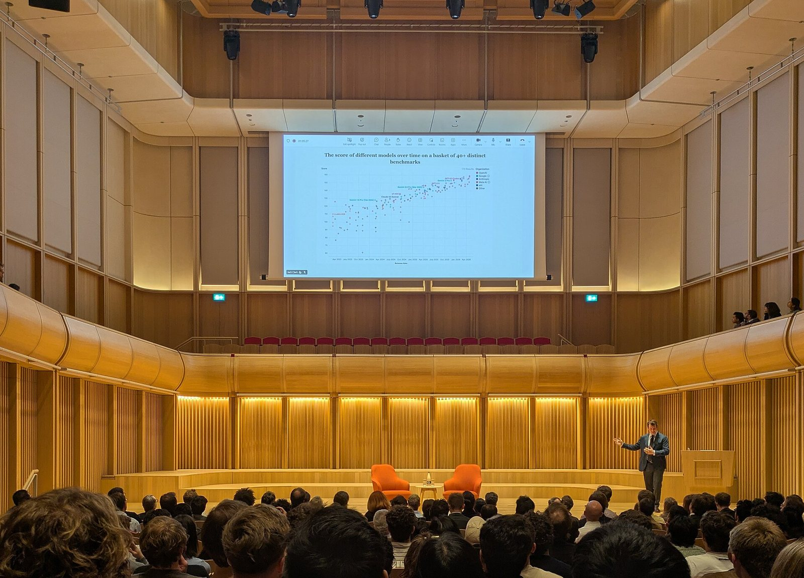

Anthropic scende sotto gli 83 dollari del collocamento: che cosa è successo a Facebook, Uber e SpaceX dopo lo stesso scivolone
Il titolo che giovedì scorso era arrivato a 115 dollari ne vale 82: chi ha comprato nel giorno del debutto perde quasi il 30%. Ma cadere sotto il prezzo di collocamento è successo anche a molte delle società più attese degli ultimi quindici anni, con finali molto diversi.

In sintesi
- Anthropic chiude a 81,90 dollari (−6,54%): sotto gli 83 del collocamento dopo quattro sedute.
- Dal massimo del debutto (115,10 dollari) il calo è del 28,8%.
- Pesano le vendite sulla tecnologia, un'inchiesta di Axios e le vendite dei fondatori; gli analisti però restano positivi.
- Il 15 dicembre scade il primo blocco: fino a circa 303 milioni di azioni potranno essere vendute.
- Facebook nel 2012 scese sotto il prezzo alla seconda seduta e oggi vale +1.452% rispetto al collocamento; Rivian −85%.
Anthropic chiude a 81,90 dollari (−6,54%), sotto gli 83 dollari a cui erano state collocate le azioni il 18 novembre. Ci sono volute quattro sedute: giovedì 19, al debutto al Nasdaq, il titolo aveva aperto a 111,50 dollari, toccato 115,10 e chiuso a 97,17. Da quel massimo ha perso il 28,8%. La società che ha firmato la quotazione più grande della storia, con 980 milioni di azioni vendute e 81,3 miliardi di dollari raccolti (SpaceX, a giugno, ne aveva raccolti 75), si ritrova così con un problema d'immagine che a Wall Street ha un nome preciso: Broken IPO (quotazione «rotta», scesa sotto il prezzo di collocamento).
Perché è scesa
Il clima. Martedì i titoli dell'intelligenza artificiale sono stati venduti in tutto il mercato: l'indice dei chip ha perso quasi l'8%, come raccontiamo nell'articolo sulla chiusura di Wall Street. Secondo la CNBC pesano anche i dubbi sulla sostenibilità delle spese da migliaia di miliardi per i centri dati: Anthropic stessa, secondo il prospetto citato da BigGo Finance, ha impegni di spesa per circa 900 miliardi di dollari, soprattutto in potenza di calcolo, fino al 2045.
Le notizie su Anthropic. Secondo un'inchiesta di Axios ripresa da BeInCrypto e Yahoo Finance, molti dipendenti di Anthropic e OpenAI dubitano che i modelli più potenti non ancora pubblicati possano essere resi sicuri per il pubblico, e si discute di tenerli solo per uso interno. Secondo BigGo Finance e BeInCrypto, inoltre, il giorno dopo il debutto Dario Amodei, amministratore delegato e cofondatore, ha venduto oltre 3,37 milioni di azioni, per più di 280 milioni di dollari. E secondo la CNBC circa metà degli investitori istituzionali che avevano chiesto azioni non ne ha ricevute, ma quei fondi «non sembrano correre» a comprarle in Borsa.
Gli analisti restano positivi. Le prime raccomandazioni, arrivate questa settimana, sono tutte d'acquisto, secondo la CNBC: Wedbush (giudizio Outperform, migliore del mercato, prezzo obiettivo 120 dollari), Canaccord Genuity (Buy, comprare, 135 dollari) e Oppenheimer (Outperform, 150 dollari). I prezzi obiettivo sono stime degli analisti, non previsioni: possono essere rivisti in qualsiasi momento.
Che cosa scommettono le opzioni
Sul mercato delle opzioni, secondo la CNBC con i dati di SpotGamma, a metà giornata erano passati di mano circa 500.000 contratti, 300.000 dei quali Put (opzioni che guadagnano se il titolo scende) e 200.000 Call (che guadagnano se sale). L'operazione più grande è stata l'acquisto di quasi 11.000 opzioni put con prezzo d'esercizio 75 dollari e scadenza a metà dicembre, per 7,5 milioni di dollari: una scommessa su un ulteriore calo. Ma non mancano gli acquisti di call per gennaio. La volatilità implicita, cioè l'oscillazione che il mercato si aspetta, è salita a 96.
💡 Impara: la volatilità implicita
La Implied Volatility (volatilità implicita) è l'oscillazione futura di un titolo che si ricava dai prezzi delle sue opzioni: più gli investitori pagano per proteggersi o per scommettere su un movimento, più è alta. Si esprime come percentuale annua: un valore di 96 significa che il mercato prevede oscillazioni molto ampie, intorno al 96% in un anno (circa il 6% al giorno). Per un confronto, sull'intero S&P 500 il valore corrispondente, il VIX, è oggi intorno a 26. Non dice in che direzione si muoverà il titolo, solo quanto.
Le date da segnare
30 novembre. Secondo BigGo Finance, MSCI aggiungerà Anthropic ai suoi indici globali dopo la chiusura del 30 novembre: i fondi che replicano quegli indici dovranno comprare il titolo, e secondo le stime di Intropic potrebbero assorbire fino al 30% delle azioni offerte entro fine anno. 15 dicembre. Scade il primo Lock-Up: secondo il prospetto citato da BigGo Finance, fino a circa 303 milioni di azioni potranno essere vendute. Altre scadenze seguiranno il 5 e il 19 gennaio e il 2 febbraio.
💡 Impara: il periodo di blocco
Il Lock-Up (periodo di blocco) è l'impegno con cui fondatori, dipendenti e primi investitori di una società appena quotata rinunciano a vendere le proprie azioni per un certo tempo, di solito alcuni mesi. Serve a evitare che il titolo venga inondato di vendite subito dopo il debutto. Quando il blocco scade, la quantità di azioni che possono essere vendute aumenta all'improvviso: per questo le date di scadenza vengono seguite con attenzione, e spesso il titolo è debole nei giorni precedenti.
I precedenti: le grandi quotazioni finite sotto il prezzo
Scendere sotto il prezzo di collocamento è successo anche a molte delle quotazioni più attese degli ultimi quindici anni. Secondo BigGo Finance, Facebook ci finì alla seconda seduta nel 2012; secondo la CNBC, SpaceX, quotata a giugno, ci è arrivata dopo 21 sedute. Abbiamo ricostruito i casi principali con i prezzi di chiusura:
| Società | Collocamento | Primo giorno | Sotto il prezzo |
|---|---|---|---|
| Facebook (2012) | 38 $ | +0,6% | alla 2ª seduta |
| Snap (2017) | 17 $ | +44,0% | alla 90ª seduta |
| Uber (2019) | 45 $ | −7,6% | il primo giorno |
| Rivian (2021) | 78 $ | +29,1% | alla 47ª seduta |
| Arm (2023) | 51 $ | +24,7% | alla 22ª seduta |
| SpaceX (2026) | 135 $ | +19,2% | alla 23ª seduta |
| Anthropic (2026) | 83 $ | +17,1% | alla 4ª seduta |
Che cosa è successo dopo
Ecco l'andamento successivo di ciascun titolo, sempre rispetto al prezzo di collocamento:
| Società | Punto più basso | Un anno dopo | Oggi |
|---|---|---|---|
| −53% | −34% | +1.452% | |
| Snap | −77% | +6% | −71% |
| Uber | −67% | −30% | +44% |
| Rivian | −89% | −58% | −85% |
| Arm | −6% | +171% | +217% |
| SpaceX | −20% | — | −7% |
Le storie non potrebbero essere più diverse. Facebook arrivò a perdere più della metà del valore di collocamento, il 4 settembre 2012, e tornò sopra i 38 dollari solo il 2 agosto 2013, quindici mesi dopo: oggi, come Meta, vale più di 15 volte il prezzo di collocamento. Uber scese sotto il prezzo già il primo giorno e toccò il punto più basso nel marzo 2020, con il Covid; oggi è sopra del 44%. Arm ci finì per pochi giorni nell'ottobre 2023 e da allora è più che triplicata. Al contrario Snap e Rivian avevano debuttato con grandi rialzi: Snap è poi tornata sopra il prezzo di collocamento, ma oggi perde il 71%; Rivian non ci è mai tornata e perde l'85%. SpaceX, la quotazione più grande prima di Anthropic, è tornata sopra il prezzo di collocamento ad agosto, ma oggi è di nuovo sotto (−7%).
La lezione dei precedenti è che il prezzo delle prime settimane dice molto sull'entusiasmo del momento e poco sul valore dell'azienda. A fare la differenza sono stati, negli anni successivi, i conti delle aziende. Per Anthropic la domanda è la stessa: riuscirà a trasformare la crescita dei ricavi in profitti abbastanza grandi da giustificare circa 900 miliardi di dollari di impegni di spesa? Questo articolo non è un consiglio di investimento.
Nota metodologica: prezzi di chiusura di Yahoo Finance, a seduta chiusa del 24 novembre 2026 (per Meta, Snap, Uber, Rivian e Arm i prezzi di Yahoo sono rettificati per eventuali operazioni sul capitale). «Sotto il prezzo», «punto più basso», «un anno dopo» (252 sedute) e «oggi» sono calcolati da Alma Finanza sulle chiusure giornaliere: per questo SpaceX risulta sotto il prezzo alla 23ª seduta, mentre la CNBC indica 21 sedute. Prezzi di collocamento: Facebook 38 dollari, Uber 45, Snap 17 (Fox Business, Inc., Fortune); Rivian 78 (TechCrunch, Bloomberg); Arm 51 (Renaissance Capital, Fortune); SpaceX 135 (Reuters tramite The Star, CBS News); Anthropic 83 (CNBC, TradingNews). Somme raccolte: Anthropic 81,3 miliardi di dollari (CNBC, TradingNews), SpaceX 75 miliardi (NPR, CBS News). Il massimo del primo giorno di Anthropic (115,10 dollari) e le 980 milioni di azioni sono di TradingNews e BigGo Finance. Fonti delle notizie: CNBC (analisti, opzioni con dati SpotGamma e ThinkOrSwim, domanda degli investitori istituzionali, dubbi sulla spesa per l'intelligenza artificiale, SpaceX), Axios tramite BeInCrypto e Yahoo Finance (dubbi dei dipendenti sui modelli), BigGo Finance e BeInCrypto (vendite di Dario Amodei), BigGo Finance (prospetto: impegni di spesa, scadenze del blocco, ingresso negli indici MSCI, stima di Intropic). Le citazioni sono tradotte da Alma Finanza.